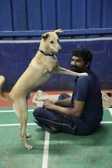

Heartwarming Success Stories
When animals were left untreated and homeless, a safe and welcome abode awaited them, owing to a passionate animal lover. An animal welfare organisation in Mudar village of Karkala Taluk provides shelter to orphaned and wounded stray dogs. The Ahimsa Animal Care Trust, founded by Veeranjay Hegde has opened its doors to more than 200 injured dogs.
When animals were left untreated and homeless, a safe and welcome abode awaited them, owing to a passionate animal lover. An animal welfare organisation in Mudar village of Karkala Taluk provides shelter to orphaned and wounded stray dogs. The Ahimsa Animal Care Trust, founded by Veeranjay Hegde has opened its doors to more than 200 injured dogs.
Hegde has loved animals from a young age. During his school days, he came across many stray dogs that were incapacitated due to injuries caused by road accidents and the negligence of vehicle drivers. Moved by this, he was inspired to establish the trust to come to the aid of such animals. “We nurture 280 strays and treat the dogs suffering from cancer for free,” says Hegde.
The organisation sets up an adoption camp once a month, with the objective of encouraging the adoption of indie breeds. Visitors interact with the animals and adopt a pet companion of their preference. In the initial stage, Veeranjay fostered around 30 dogs in his own home. But as the number of wounded dogs surged, he struggled to even provide them with basic essentials. Space constraint was a major concern as well. It was then that Hegde built a shelter to treat and care for the dogs. This cost him around Rs 15 lakh, contributed by donors.
The Ahimsa Animal Care Trust organises surgery camps for dogs suffering from cancer, disabilities and other diseases at no cost. The dogs are provided with medication and surgery after consultation with veterinary doctors. Altogether, a surgery camp can cost up to Rs 50,000, including medicines, which cost Rs 25,000. As of now, seven surgery camps have been conducted. Another major programme is the ‘Animal Birth Control’ campaign, which offers sterilisation procedures for pet dogs. Through this initiative, various street dogs have also been sterilised. The purpose of this campaign is to control the population growth among street dogs. “Predominantly, people tend to abandon female dogs, as they give birth. Families are worried that they will have to take care of the puppies as well. If we sterilise female dogs, people will be more open to adopting them,” adds Hegde.
Currently, the trust has six employees. Animal lovers often visit and celebrate their birthdays by donating to the organisation. The funds collected are used to provide food and medicines for the dogs. The cost of their food goes up to Rs 5,000 per day. In addition to caring for street dogs, the Ahimsa Animal Care Trust provides shelter to injured cats and rabbits, as well as other domestic animals that requires treatment. On the occasion of the 75th Independence Day celebration, marking the Azadi Ka Amrit Mahotsav, Veeranjay also laid the foundation for a goshala (shelter for cows).
